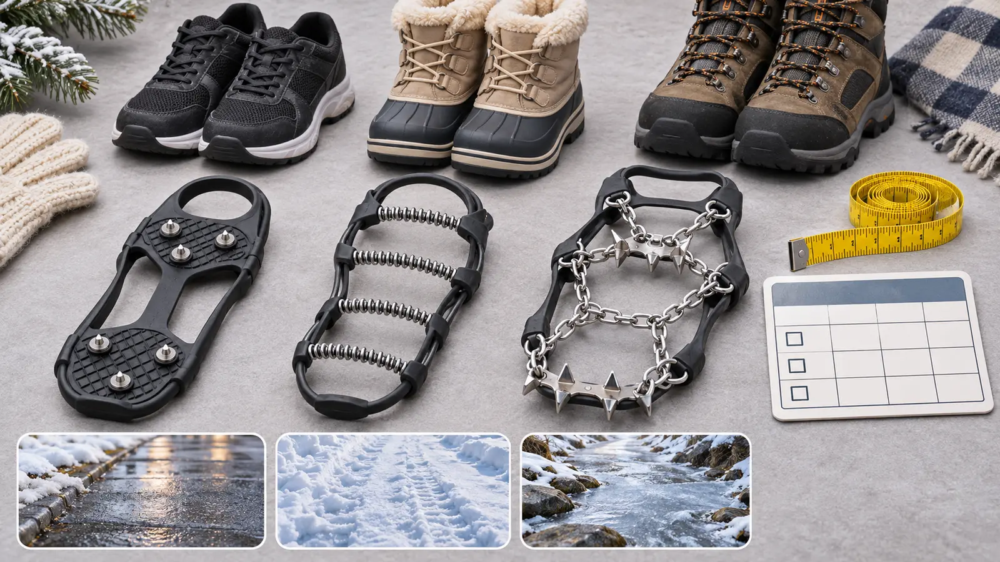

Low-profile studs
Best fit: maker-approved pavement, hard-packed urban paths or running/walking surfaces. Tradeoff: less bite than trail spikes and model-specific limits on bare pavement, indoors and mixed ground.
WINTER GEAR · COMMERCIAL · AUTHORITY-EXPANSION
Traction is not a permission slip for bad ice. Match the device to the surface, fit the exact boot, read the exact manual, and turn around when the route needs more skill than the family has.

Commercial disclosure: This guide includes Amazon Associate links to three broad traction categories. If you buy through them, Mr Adventure Dad may earn a commission at no extra cost to you. No item was hands-on tested for this article; links do not imply child approval, fit, certification, availability, price, rating or performance.
Choose the surface before the metal. Low carbide-style studs are generally built for hard, even winter surfaces. Coil devices target packed snow and ice but can be awkward or damaging on clear hard surfaces when the maker excludes them. Chain-and-spike pedestrian devices target icy trails. None of those labels proves that a particular model fits a child, a snow boot or today’s mixed route.
NYS DEC’s winter-hiking guidance tells hikers to pack micro-spikes or crampons for icy conditions, use snowshoes or skis in deeper snow, monitor weather and turn back when conditions worsen. That is a preparation signal, not a product prescription. If the route is steep enough to require technical crampons, an ice axe or mountaineering judgment, this family buying guide stops.
Do not shrink an adult recommendation into a child recommendation. One current Kahtoola MICROspikes size guide includes an extra-small range marked for youth size 4 and above, while still saying sizes are approximate and irregular footwear may require a different size. That means the exact boot and device must be checked; it does not mean every child, boot or route is approved.
By contrast, Yaktrax Canada’s current FAQ says its devices need roughly 70–75 pounds to engage effectively and says it does not make devices for children. Regional pages and individual products can differ. The only honest rule is this: if the exact manufacturer does not support the wearer’s size, weight, footwear and intended surface, do not use that device.
Fit the device while seated in a dry, well-lit place. Do not walk across finished floors in metal traction. An adult should stretch and place the device only as the manual shows, then inspect toe, heel, sidewall and underside alignment. The Kahtoola manual requires users to read and understand instructions, know the device’s capabilities and limitations, inspect it, and accept that no footwear can resist slipping in every condition.
Ask the wearer to flex the boot and move the ankle while seated. The band must not crush a soft upper, interfere with a zipper, pull a boot liner, cover a closure or sit against skin. A too-tight device can damage footwear or be impossible to remove with cold hands; a loose device can rotate or come off. If fit is not obvious, contact the manufacturer or a qualified outdoor retailer with the actual boot model and size.
A family route can move from snow-covered parking to bare concrete, metal stairs, wood decking, rock, mud and ice in ten minutes. Each transition may change whether a traction device helps or creates a hazard. Build a stop point before the surface changes. One adult chooses a stable place, everyone stops, and devices are removed or changed according to their instructions.
Use the three links below as category research, not a podium. Compare the exact manual, intended terrain, size chart, minimum user requirements, inspection points, materials, storage, warranty and return terms. Recheck current manufacturer sources before purchase. Product details and availability change.
No universal price is useful here, and no sale price is claimed. A cheaper device that excludes the wearer or route is wasted money; a premium device cannot fix an unsafe route. Before the return window closes, spend 15 dry minutes with the current manual: inspect every component, fit both boots while seated, verify the marked orientation, practice removal without walking on finished flooring, and confirm the storage container will not be punctured. Return rather than improvise if any required limit or fit is unclear.
Before leaving, run the family weather cutoff. Pair the device with properly fitted footwear using the kids’ winter boot guide. Deep snow may call for a properly fitted snowshoe rather than traction points; the kids’ snowshoe guide starts with total load and binding fit.
On trail, use short deliberate steps, keep space between people and stop before every surface change. Traction does not make ice over water safe. DEC warns that snow-covered ice may not hold a person and that inlets, outlets, docks, bubblers and running water are particular hazards. Stay off uncertain ice.
Use the restroom before the trail or verify a current facility; winter toilets may be seasonal or unmaintained. Eat at a safe stop with devices removed, not while walking on ice. Keep the transition and exit plan simple enough that a cold child can follow it.
If freezing rain is active, wind is moving branches, the parking surface is uncontrolled, daylight is short or the child cannot manage the device independently enough for the route, cancel. The low-energy version is a cleared neighborhood loop without add-on devices or an indoor plan. Do not stage a “practice slip” on ice.
Kid-meltdown rule: stop on the nearest stable surface, keep the child still, and let the adult remove or inspect the device according to its instructions. Do not drag, threaten or promise that the ice will improve. If fit, cold or fear does not recover, return by the safest known route or call for appropriate help.
Skip when the exact model does not support the wearer; the device cannot sit securely on the actual boot; the route mixes too many incompatible surfaces; balance, sensation or mobility needs require clinical advice; the child is likely to run, climb or kick; or the terrain requires technical skills. A qualified outdoor professional can help with product-specific fit. A medical professional can advise on individual balance or mobility concerns.
Verified November 3, 2026 against NYSDEC’s winter hiking safety guidance and Hike Smart NY, Kahtoola’s current MICROspikes size guide and user manual, and Yaktrax Canada’s manufacturer FAQ. Brand examples explain conflicting fit boundaries; they are not rankings, affiliate product selections or hands-on tests.
MAKE THE WEEK COUNT
Build the plan your family can finish well, then leave enough energy for the next part of the day.
More family plansTHE USEFUL STUFF
These are practical categories to compare—not a reason to overpack. Check fit, specifications and current reviews before buying.
Paid links: As an Amazon Associate I earn from qualifying purchases. You pay no additional cost.
Compare the exact intended surface, current footwear size chart, user limits, inspection points and transition rules. Low-profile studs do not make every paved surface slip-proof.
See current options → COMPARE ON AMAZONCheck the exact wearer and footwear limits, packed-snow and ice use, excluded surfaces, fit method and storage instructions. Some manufacturers do not make child sizes.
See current options → COMPARE ON AMAZONRequire the maker’s current pedestrian-use manual, exact boot fit, inspection, route match and a clear boundary before technical terrain. These are not climbing crampons.
See current options →